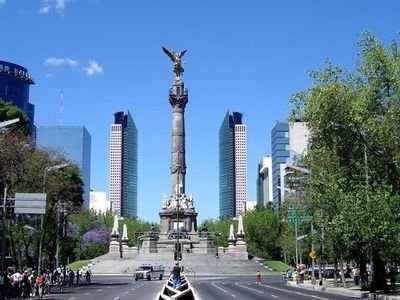
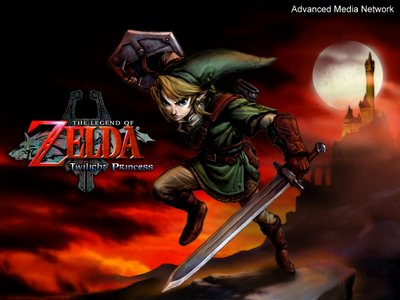
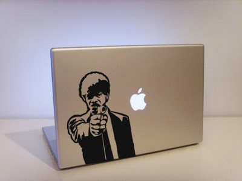
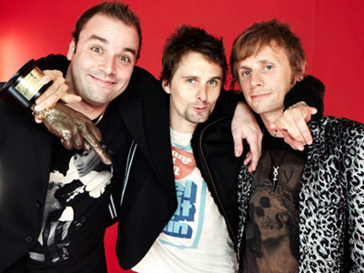
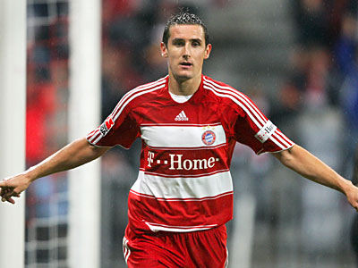

Mi biografía
Nací un 10 de enero de 1995 en la CDMX, tengo solo una hermana, la cual es mayor que yo. Por otra parte tengo una familia muy grande, de parte de mi mamá son 9 tíos y de parte de mi papá son 2 tías por lo que tengo una familia bastante extensa.

Desde pequeño fui bueno en la escuela y también desde pequeño me comenzó a interesar la tecnología, comenzando por los videojuegos y las computadoras.

Desde pequeño siempre me interesaron los robots por lo que en un principio mi idea era estudiar Mecatrónica o Robótica, aunque siempre estuvo el interés en la computadora.

En la secundaria comenzé a definir mis gustos musicales, en general escuchaba de todo pero me enfoqué más en el rock, y me agradaron mucho bandas como Keane, Coldplay y Muse. Esta última sigue siendo mi favorita hasta hoy en día.

También otra de las cosas que me interesan mucho es ver el fútbol, de equipos mexicanos le voy al Cruz Azul y de equipos extranjeros le voy al Bayern Múnich. Y mi más grande ídolo es Miroslav Klose, ya que desde que lo vi jugar en el Bayern y en la selección alemana me pareció un futbolista muy digno de admirar y mi sueño sería alguna vez llegarlo a conocer.

En el último año de preparatoria tuve la materia de Informática Aplicada, en donde conocí la programación, la cuál desde el incio me fascino por lo que al final me decidí a estudiar la carrera de Ingeniería en Computación, la cual sigo cursando y estoy a punto de terminar.